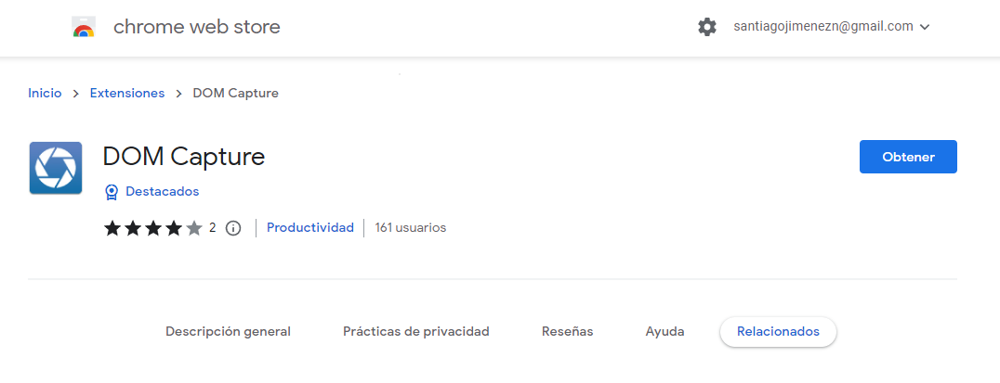
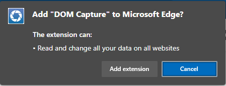
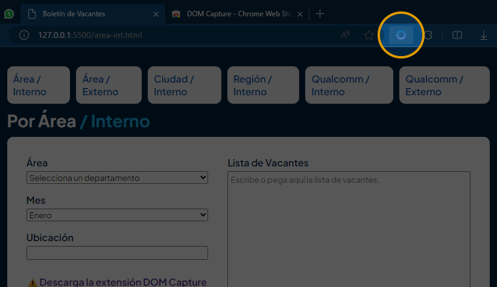

Generador de Boletines de Vacantes
¿Cómo utilizar el generador de boletines?
Da click en los pasos naranja para desplegarlos.⬇️
Paso 1: Instala la extensión DOM Capture / solo se realiza la primera vez.
DOM Capture es una extensión que se instala en el navegador Chrome, Microsoft Edge y todos los basados en el motor Chrome.
Sirve para convertir el código (en este caso el flyer) y convertirlo en una imagen que se pueda usar para publicar.
Da click en el botón azul para instalarlo.
Da click en Add extension / Agregar extensión.
Da click en los 3 puntos de la esquina y después abre la opción "Extensions"
(Mismo paso tanto
para
Edge como para Google Chrome)
Busca extensión en la ventana que aparecerá y activa el ícono de OJO del lado derecho, para fijarlo a la barra del navegador.

Paso 2: Entra al boletín que quieras generar 👇
Paso 3: Llena el boletín.
Llena los campos que correspondan.
Cada boletín tiene campos diferentes, dependiendo de su uso.
Escribe / copia cada vacante por renglón, para añadir una sub-área, ciudad o zona, agrega un guión
(-) al inicio del renglón para crear una sección.
Paso 4: Descarga la imagen con DOM Capture.
Da click en el botón azul que dice "Copiar String...".
Aparecerá una ventana encima con un aviso y se copiará automáticamente un pequeño texto.
Este botón se encuentra en todos los formatos de boletín.
Da click en el ícono azul de DOM Capture.
Aparecerá una pequeña ventana, encima del ícono, pega el texto que se copió anteriormente, ya sea con
Click Derecho > Pegar, o con el atajo CTRL+V.
NOTA
Esta parte de click en botón, copiar, pegar... solo se realiza la primera vez, después se queda
guardado y directamente podemos pasar al siguiente paso.
Después da click en el botón verde "Save as Image".
Aparecerá una ventana para seleccionar la carpeta donde guardar la imagen.